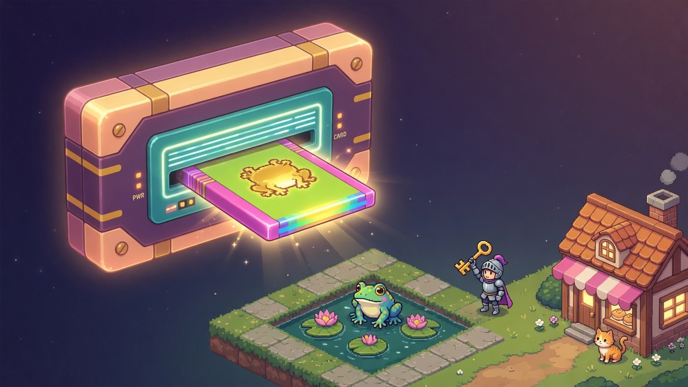
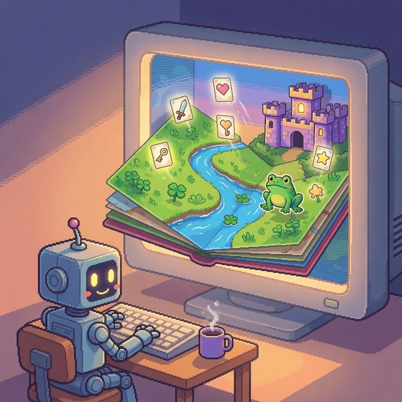
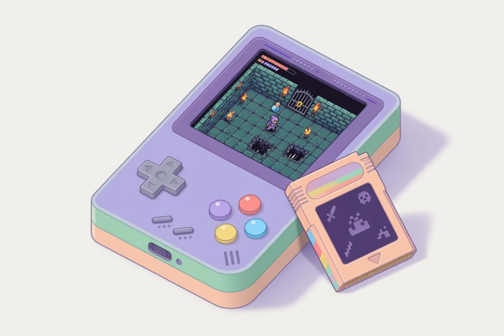

OPEN-SOURCE FANTASY CONSOLE · v0.1
Small, deterministic, text-native. Describe a game; an agent builds it, looks at it, and proves it can be won. Then play it in the browser or on a retro handheld.
curl -fsSL https://raw.githubusercontent.com/niconistal/kartu/main/install.sh | sh
Straight from the runner, no touch-ups. Click one to play it in your browser — arrows move, Z is A, X is B.
PICO-8 proved that a small, opinionated machine is a wonderful place to make games. Its constraints were chosen for people who enjoy them. Kartu keeps the idea and changes the constraints to ones a language model can read and test against.
Sprites are grids of palette characters. Maps are pictures made of legend characters, with @ markers for the hero, enemies and pickups. Songs are notation. Everything is readable, diffable and patchable — by an editor, a model or git.
Seeded random, no clock, polynomial trig, palette indices in the framebuffer. Same seed + same inputs give bit-identical frames and audio on x86, ARM and WebAssembly. Replays, saves and bots stand on this.
A headless runner prints what the game logs, saves screenshots, dumps state as JSON and replays inputs. Goal bots path-find over the live map. kartu playtest refuses to pass a game that can't be won or that hits the player unfairly.
Here is a whole one. init runs once, update and draw run sixty times a second. Limits are on runtime — instructions per frame, memory — never on source size, so nobody has to golf.
palette p
. clear
w #f4f4f4
y #ffcd75
sprite star 8x8 pal=p
...yy...
...yy...
yyyyyyyy
.yyyyyy.
..yyyy..
.yy..yy.
yy....yy
........x = 156
function update()
if btn("left") then x = x - 2 end
if btn("right") then x = x + 2 end
end
function draw()
text("HELLO, KARTU", 112, 40, "w")
spr("star", x, 116)
endAnd a whole game, with the built-in top-down kit: rooms, a hero, enemies, pickups, a locked door, HUD, title and win screens, music. This is the entire main.lua of the Dungeon cart above.
local td = kit("topdown")
td.setup {
title = "DUNGEON", intro = "The key is somewhere east. Bring it back to the door in the hall.",
rooms = { { "hall", "gallery", "vault" } },
hero = { spr = "knight1", walk = "knight_walk", speed = 1.5, hp = 3 },
attack = { btn = "a", spr = "sword", spr_v = "swordv" },
enemies = { bat = { spr = "bat_fly", move = "chase", speed = 0.8, hp = 1, drop = "heart" } },
pickups = { key = { spr = "key", toast = "You found the key!" }, heart = { spr = "heart", heal = 1 } },
doors = { door = { needs = "key", opens = "dooropen", locked = "Locked! Find the key." } },
win = "flag:exit",
hud = { hearts = { "heart", "heart0" }, show = { "key" } },
music = { title = "adventure", play = "cave", win = "victory" },
}
function update() td.update() end
function draw() td.draw() endEvery cart carries a bot.txt: a plan in plain words. The goal bot reads the live tile map, path-finds and presses the buttons frame by frame. The playtest runs it on three seeds and reports unfair hits, softlocks and win times. Because the console is deterministic, the verdict is the same on your laptop, in the browser and on a handheld.
# dungeon/bot.txt
hero world.hero
fight world.enemies a 30
tap a
wait until world.state == "play"
goto tile 19,8
hold right 16
wait until world.room == "gallery"
…
goto flag door
goto flag exit$ kartu playtest carts/dungeon
playtest PASS: the bot won on every seed, no unfair hits
seed 1: WON at f1409 (23.5 s)
seed 2: WON at f1426 (23.8 s)
seed 3: WON at f1412 (23.5 s)
$ kartu check carts/crypt
carts/crypt: 2 palettes, 9 sprites, 3 clips, 5 tiles, 1 maps
check: 0 error(s), 0 warning(s), ran 120 frames clean
$ kartu run carts/dungeon --bot bot.txt --until WIN
[log f0] room THE HALL
[bot f152] goto tile 19,8: reached (150 frames)
[log f158] room THE GALLERY
[log f179] defeated bat
[log f698] got key
…
[log f1408] door open
[log f1409] WIN
Kartu meets agents at three levels. The lowest one is never broken.
kartu check, run and playtest print plain text with stable exit codes. Any agent with a shell can make games.kartu new writes the workflow into the folder: small steps, look at the screenshots, write the bot plan, playtest before saying "done". CLAUDE.md points at it.kartu mcp serves the same functions over the Model Context Protocol, with screenshots returned as images. kartu setup connects Claude Code.kartu-core is a Rust library with no window, no audio device and no files. A host hands in button bits, calls step() sixty times a second and shows the framebuffer. That is the whole contract — so the same console runs natively, in the browser through WebAssembly, and on the framebuffer of a Miyoo Mini at a steady 60 fps.

JOIN IN
Kartu is v0.1: young, working, and still soft in places — the best time to shape one. Play the carts and tell us what's confusing, make a cart, point your agent at it and report where it stumbled, write a kit, port it to your handheld. Every part is open, and every part takes pull requests.